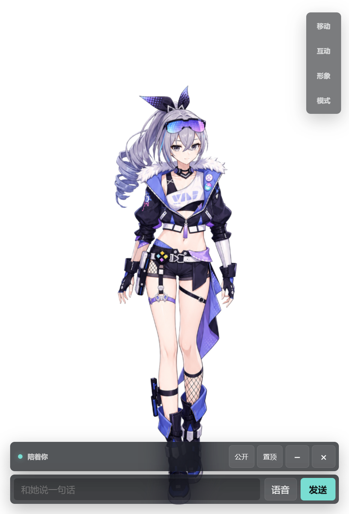

作ったもの実際のアプリ画面（2026年7月時点のテスト版）。キャラクター画像は本人の独自創作ではありません。掲載者の判断で使用しており、第三者素材の出典と掲載許諾は未確認です。素材ファイルやアプリ本体は配布していません。
AIデスクトップコンパニオン
文字だけでなく、声や表情でもやり取りできる身近なAIを作ってみたい。対話や音声機能をつなぐデスクトップアプリを開発しています。

Why I started
取り組んだきっかけ
会話するソフトウェアを、身近な存在として動かしたい。
AIとのやり取りを、より身近で使いやすい形にすることに関心があります。会話に表情や音声、クリックへの反応を組み合わせた個人用アプリを試作しています。
What I cared about
大切にしたこと
- ひとつの体験として自然に
- 会話が出るだけでなく、声や表情、クリックへの反応がつながって感じられることを大切にしました。
- 表示と音声のずれ
- 表示用の更新と再生指示を分け、同じ音声が重複して再生されないように確認しました。
- 日常で動かせること
- 品質だけを追うのではなく、応答速度やローカル計算資源とのバランスを考えました。
Results & learning
結果と学んだこと
2D立ち絵の状態切り替え、クリックの反応、会話表示、音声認識・合成を連携する個人用アプリを開発しています。
会話、音声、見た目を個別に動かすだけでは、使いやすい体験になりません。処理同士のタイミングや役割を整理することに取り組んでいます。
自分の担当と、生成AIの活用
体験と要求の整理、機能の統合、AI生成実装の評価、表示・音声・操作の検証と改善。
生成AIを実装の補助に使い、機能の取捨選択、出力の評価、実際の操作確認と改善判断を行いました。音声認識・合成には既存のモデルを利用しています。
取り組みの詳細
体験を分解する
会話表示、表情・姿勢の切り替え、クリックへの反応、音声の流れを整理しました。
複数の処理をつなぐ
Electronの画面とPython / FastAPIのバックエンドをWebSocketで連携し、ローカル音声サービスを統合しました。
同期の問題を調べる
逐次表示と音声再生のタイミングを確認し、実利用で見つかった遅延や重複を切り分けて改善しています。
掲載資料と現在の課題
開発中の個人用アプリです。応答速度と音声品質のバランス、表示と音声の同期をさらに改善しています。音声データ、会話記録、モデルは公開していません。
実際のアプリの待機画面です。